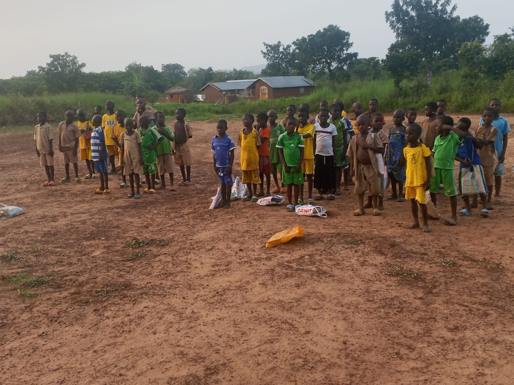

SOLIDARITÉ • DIGNITÉ • ENGAGEMENT • HUMANITÉ
Une main tendue pour un avenir meilleur
SolidHand International est une organisation non gouvernementale à vocation internationale. Nous soutenons des élèves et des jeunes démunis au Togo pour leur offrir un repas, une formation et un avenir autonome.

Yao Chung GalleyPrésident fondateur
2projets sociaux et humanitaires en cours
112jeunes accompagnés (102 à Bassar, 10 à Anié)
2localités d’action au Togo : Bassar et Anié
Qui sommes-nous
Agir avec rigueur et humanisme
SolidHand International est née d’une volonté de transformer la solidarité en actions concrètes. Notre ambition : étendre progressivement nos initiatives à d’autres communautés, partout dans le monde.
Notre mission et nos principesNos projets
Ce que nous faisons aujourd’hui

Sur le terrain
Nos actions auprès des enfants
Repas, accompagnement, formation : découvrez les actions menées sur le terrain et l’aide apportée aux enfants.
Voir les actions de terrainNotre équipe
Des personnes engagées
Neuf membres du bureau et de l’équipe opérationnelle, répartis entre le Togo, les États-Unis, Haïti et l’Italie.
Rencontrer l’équipeVous voulez aider ?
Bénévolat, compétences, partenariat ou don : chaque geste compte pour les enfants que nous accompagnons.
Nous soutenirNous contacter